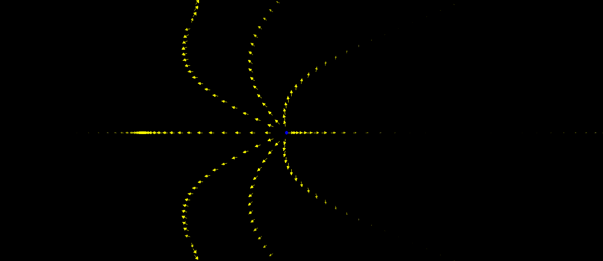
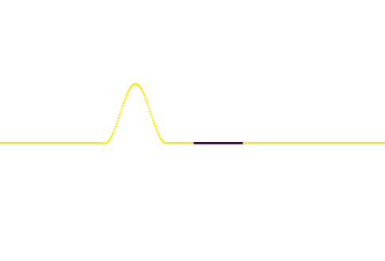

I was a Mathematics postdoc at UNSW and University of Sydney. See here for my list of Publications.
See https://github.com/kb-math/electrodynamics . This plots various electric fields generated by give charges. For example, below is a plot of the electric field emmited by a single positively charged particle (blue dot shown) moving sinusoidally.

This is simulated by solving a wave equation where the wave speed is a function of space (rather than a constant). This in general is probably(?) impossible analytically, so we have applied the numerical method known as the finite difference method. Counting elements of the congruence subgroup (joint with I.E.Shparlinski)
Canadian Mathematical Bulletin. Published online 2024:1-15. doi:10.4153/S0008439524000365 arXiv
Counting embeddings of free groups into SL2(ℤ) and its subgroups (joint with A.Ostafe and I.E.Shparlinski)
To appear in Annali della Scuola Normale Superiore di Pisa, Classe di Scienze arXiv
Glasner property for linear group actions and their products (joint with A. Fish) arXiv
Mathematische Zeitschrift. 303, 99 (2023). https://doi.org/10.1007/s00209-023-03266-x
Quantitative twisted patterns in sets of positive density (joint with A. Fish) arXiv
Accepted in Discrete Analysis
Arithmetic subtrees in large subsets of products of trees (joint with A. Fish) arXiv
Journal d’Analyse Mathématique. 150 (2023), no. 1, 359--381.
Glasner property for unipotently generated group actions on tori (joint with A.Fish) arXiv
Israel Journal of Mathematics. 255 (2023), no. 1, 109--122.
Reconstructing a minimal topological dynamical system from a set of return times (Joint with A.Fish), arXiv
Ergodic Theory and Dynamical Systems. 42 (2022), no. 9, 2723--2739.
Spherical recurrence and locally isometric embeddings of trees into positive density subsets of ℤd, arXiv
Math. Proc. Cambridge Philos. Soc. 165 (2018), no. 2, 267–278.
Twisted patterns in large subsets of ℤN, (Joint with M. Björklund) arXiv
Commentarii Mathematici Helvetici. 92 (2017), no. 3, 621–640.
Multidimensional lower density versions of Plünnecke inequalities, arXiv
Electronic Journal of Combinatorics. 24 (2017), no. 3. Available at: https://www.combinatorics.org/ojs/index.php/eljc/article/view/v24i3p34 .
Plünnecke inequalities for measure graphs with applications, (joint with A. Fish) arXiv
Ergodic Theory and Dynamical Systems,
Cambridge University Press. 37 (2017), no. 2, 418–439.
Chalmers University (Gothenburg, Sweden)
September-October 2015
(2023) Number Theory Down under 11 at ANU (Canberra).
(2023) Trends in Metric Number Theory at Latrobe University Bendigo (Invited speaker)
(2022) Dynamics in NZ at Karioitahi Beach (New Zealand)
(2022) Number Theory Down Under 10 at the Univeristy of Queensland.
(2021) AustMS: Dynamical Systems and Ergodic Theory session. December 2021.
(2021) Invited Speaker for Number Theory Down Under 9 at the University of Sydney.
(2016) Ergodic Theory and its Applications at Sydney University.
(2016) CANT 2016 at the CUNY Graduate Center (New York).
(2015) Wrocław University of Technology (Poland).
(2015) Workshop on Algebraic, Number Theoretic and Graph Theoretic Aspects of Dynamical Systems UNSW
(2014) Australian Mathematics Society meeting (hon. mention for student talk prize).
(2014) Sydney Dynamics Group seminar.